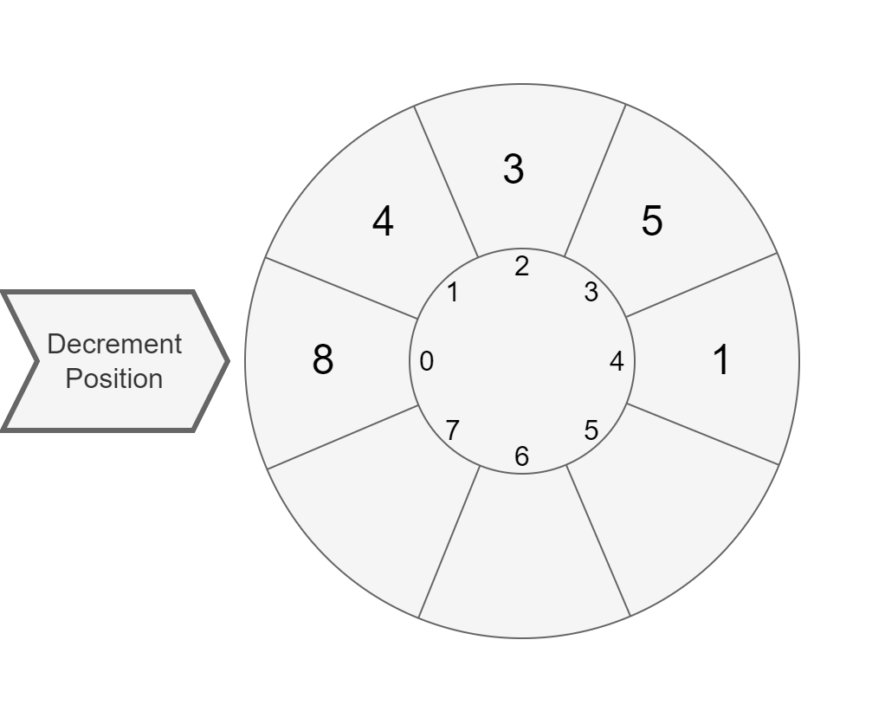

The purpose of this exercise is to train you designing simple classes and their relations.
Estimated workload of this exercise is 2h.
Decrementing Carousel is a container, accepting int elements.
DecrementingCarousel has a maximum capacity, specified via the constructor.
When created, DecrementingCarousel is in accumulating state: you may add elements via the addElement method and can produce a CarouselRun object via the run method.
Once the run method is called, DecrementingCarousel is in running state: it refuses adding more elements.
The CarouselRun allows to iterate over elements of the carousel decrementing them one by one with the next method.
The next returns the value of the current element:

Then it decreases the current element by one and switches to the next element:
The CarouselRun iterates over elements in the order of their insertion.
When an element is decreased to zero, the CarouselRun will skip it in further iterations.
When there are no more elements available for decrementing, the CarouselRun returns -1.
The CarouselRun also has the isFinished method, which indicates, if the carousel has run out of the lements to decrement.
DecrementingCarousel has two public methods:
boolean addElement(int element) - adds an element.
If element is negative or zero, do not add the element.
If container is full, do not add the element.
If the run method was called to create a CarouselRun, do not add the element.
If element is added successfully, return true. Return false otherwise.CarouselRun run() - returns a CarouselRun to iterate over the elements.
If the run method has already been called earlier, it must return null:
DecrementingCarousel may generate only one CarouselRun object.CarouselRun has two public methods:
int next() - returns the current value of the current element,
then decreases the current element by one and switches to the next element in insertion order.
Skips zero elements. When there is no more elements to decrease, returns -1.boolean isFinished() - when there is no more elements to decrease, returns true. Otherwise, returns false.